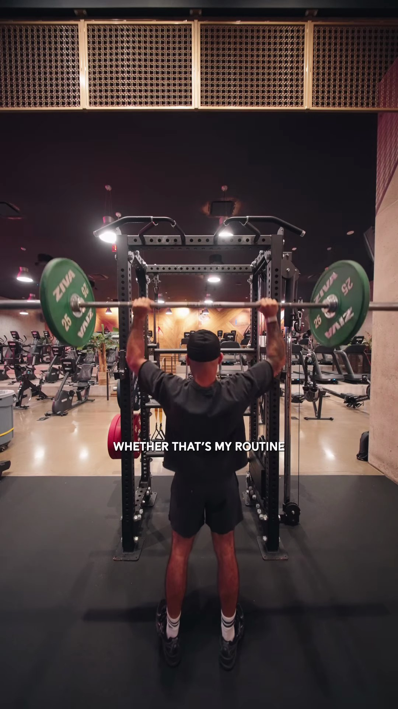

Dán Link Video Mẫu → Nhận Báo Cáo Bóc Tách Phân Cảnh Chuẩn Đạo Diễn
Thấy clip nào trên mạng đang viral hay, dán link vào là AI tự động cắt từng cảnh, phân tích góc máy, ánh sáng, lấy 4 mã màu chủ đạo, bóc kịch bản song ngữ và xuất file PDF sang xịn để bạn quay theo ngay.
Quy Trình 5 Bước Tự Quay & Dựng Video Cho Creator Triệu View
Thay vì mò mẫm không biết họ làm thế nào, bạn chỉ cần ném link vào. AI tự bóc sạch từng giây: góc máy, ánh sáng, nhịp cắt cảnh và kịch bản song ngữ.
Hook: "Yo, a lot of people ask me how I shoot and edit my content, so I'm gonna break down my 5 step process."
Step 1 & 2: "I film what I'm already doing... never do something just because it looks good for content. Film yourself anywhere, nobody cares."
Step 5 & CTA: "I edit to the voiceover, not the other way around... comment [POST] and I'll send you a quiz that will help you find clarity."
Mở đầu: "Nhiều người hỏi mình làm thế nào để quay và dựng video, hôm nay mình bóc tách quy trình 5 bước:"
Bước 1 & 2: "Quay lại chính những gì bạn làm hàng ngày. Đừng diễn. Ngại quay nơi đông người là bình thường, nhưng thật ra chẳng ai để ý đâu."
Bước 5 & CTA: "Dựng video khớp theo LỜI THOẠI, không làm ngược lại... Bình luận [POST] để nhận bộ công cụ tìm hướng đi nhé!"
 CẢNH 01 • 0s - 0.75s
CẢNH 01 • 0s - 0.75s
 CẢNH 02 • 0.75s - 2.88s
CẢNH 02 • 0.75s - 2.88s
 CẢNH 04 • 4.50s - 6.63s
CẢNH 04 • 4.50s - 6.63s

CẢNH 05 • 6.63s - 7.67s"Bình luận [BÓC TÁCH], mình gửi trọn bộ kịch bản chi tiết qua tin nhắn ngay!"
"Bấm vào link bio để nhận ngay bộ 4 trợ lý AI làm video 1-chạm."
"Follow kênh để nhận các video bóc tách cách quay thực chiến mỗi ngày."